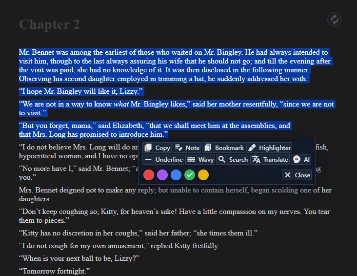

Notes & Annotations
Select text in the book and a menu appears.
What the menu offers
| Action | What it does |
|---|---|
| Copy | Copies the selected text |
| Note | Adds a note to the selected text |
| Bookmark | Bookmarks this passage |
| Highlighter | Puts a colored background behind the text |
| Underline / Wavy | Draws a line under the text |
| Search | Searches the book for the selected text |
| Translate | Translates the selected text |
| AI | Asks the AI about the selected text |

Five colors
A row of colors sits below the menu: Red, Purple, Blue, Green and Gold. Which one new annotations use by default is set in the Bookmarks & Annotations section of reading settings.
Notes
- Select text, click Note, write in the box and save.
- Notes can be reviewed in the bookmarks panel; how a note previews (Hover or Click) is set in reading settings.
- An existing note can be reopened, edited or deleted.
Turning the popup off
If you would rather not see the menu on every selection, set Selection Popup to Context Menu (right click) or Off.